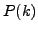
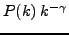
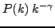

Different nodes having different degrees, this variability
is characterized by the degree distribution function ,
which gives the probability that a node has exactly  edges,
or, in other words gives the observed frequency of a node
of degree
edges,
or, in other words gives the observed frequency of a node
of degree  .
.
Scale-free graphs were first described by Barabasi based on the study of the web connectivity, followed by several different biological networks [14].
A graph is scale-free if the distribution of the vertex degree ( ) follows a power-law distribution of
the form
.
) follows a power-law distribution of
the form
.
The main property of such graphs is that it should have on one hand some highly connected nodes, called hubs, which are central to the network topology, and keep the network together and on the other hand a lot of poorly connected nodes linked to the hubs.
In the following, we will check if this scale free property also applies to the two-hybrid network described by Uetz et al [32] by computing the degree of each node and plotting the node degree distribution of the graph.
In this demonstration, we will analyze the node degree distribution of the first published yeast protein interaction network. This network is the first attemp to study the yeast interactome using the two-hybrid method and contains 865 interactions between 926 proteins [32].
In the right panel, you should now see a form entitled ``graph-topology''.
The form is now filled with a graph in the tab-delimited format, and the parameters have been set up to their appropriate value for the demonstration, i.e., the degree of all nodes will be computed. At the top of the form, you can read some information about the goal of the demo, and the source of the data.
As this is a protein - protein interaction graph, we can consider that an interaction between a protein A with a protein B corresponds to an interaction between protein B and protein A. The graph is thus not directed.
You can uncheck the compution of the closeness and betweenness as these statistics will not be discussed in this section and as this process will increase the computation time.
The computation should take less than one minute. On one hand, the result page displays a link to the result file and on the other hand the graphics and raw data of the node degree distribution are also available. These will be discussed in the Interpretation of the results section.
If you have installed a stand-alone version of the NeAT distribution, you can use the program graph-topology on the command-line. This requires to be familiar with the Unix shell interface. If you don't have the stand-alone tools, you can skip this section and read the next section (Interpretation of the results).
We will now describe the use of graph-topology as a command line tool. The two two-hybrid dataset described in the previous section may be downloaded at the following address http://rsat.scmbb.ulb.ac.be/rsat/data/neat_tuto_data/. This is the file uetz_2001.tab.
graph-topology -v 1 -i uetz_2001.tab -return degree -all -o uetz_2001_degrees.tabThe file uetz_2001_degrees.tab is created and contains the degree of each node of the Uetz et al data set.
classfreq -i uetz_2001_degrees.tab -v 1 -col 2 -ci 1 -o uetz_2001_degrees_freq.tab
XYgraph -i uetz_2001_degrees_freq.tab \ -title 'Global node degree distribution for Uetz et al (2001) interaction graph' \ -xcol 2 -ycol 4,6 -xleg1 Degree -lines \ -yleg1 'Number of nodes' -legend -header -format png \ -o uetz_2001_degrees_freq.png
The results consists in a two columns data set.
Note that if you used the '-directed' option, the resulting file contains 3 more columns specifying the in-degree, the out-degree and whether the node is only a source node or a target node.
The first result line contains the distribution results for the nodes having only one neighbour (i.e. degree comprised between 1 and 2), from it we can see that 577 over 926, i.e., 62% of the nodes have a degree of one. Moreover, about 90% of the nodes have a degree lower than 4. This is indicative of the scale-free nature of the interaction network.
The figure best illustrates the scale-freeness of the graph. When looking at the graphical representation of this distribution, we can see two curves. The blue curve represents the absolute frequency and the green curve the inverse cumulative frequency. The exponential decrease of both curves shows that there are a lot more nodes poorly connected than highly connected (hubs). The Uetz graph thus presents a scale free behaviour.